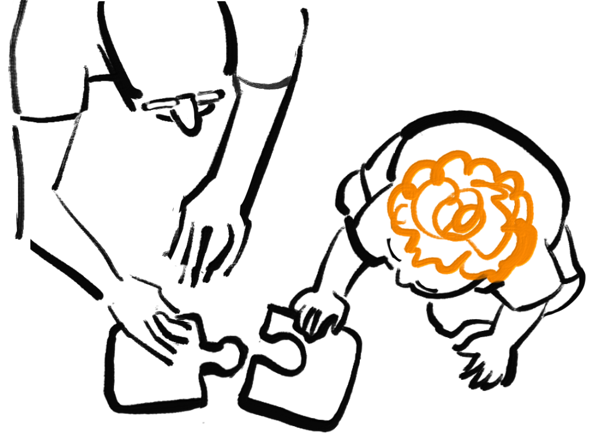

Last updated: October 25, 2026

Illustration by Itai Benjamini.
The following question arose when one of us (Itai) was assembling a two-piece jigsaw puzzle with his toddler granddaughter Ayala. To separate two adjacent pieces of a jigsaw puzzle, one has to lift one of them off the table: no amount of sliding and turning in the plane will do. Which geometric property of the cut between the two pieces is responsible for this?
Try to take the puzzles apart without lifting the pieces: drag the upper piece of each puzzle.
A jigsaw puzzle is a board cut into pieces. Two pieces \(p\) and \(q\) are adjacent if they touch, and the curve along which they touch is their interface, which we denote by \(\gamma\).
The board is a compact subset of \(\mathbb{R}^2\) containing finitely many pieces. The pieces are pairwise disjoint connected open sets, each bounded by finitely many piecewise-smooth simple closed curves. Two pieces \(p\) and \(q\) are adjacent if \(\overline p\cap\overline q\neq\varnothing\). We assume that their interface \(\gamma:=\overline p\cap\overline q\) is a piecewise-smooth simple curve, either an arc or a closed curve. Only \(p\) and \(q\) play a role below: the other pieces are ignored, and parts of the board may belong to no piece.
A board cut into six pieces. The pieces \(p\) and \(q\) are adjacent, and their interface \(\gamma\) is drawn thick.
We travel along the interface with \(q\) on our left. At each point of the interface, the normal \(n\) is an arrow which is perpendicular to the interface and points into the piece \(q\).
We parametrize \(\gamma\) by arclength, oriented so that \(q\) lies to its left. At every point where \(\gamma\) is smooth, \(\dot\gamma\) denotes the unit tangent and \(n\) the unit normal pointing into \(q\). Thus \(n=\dot\gamma^\perp\), where \(v^\perp\) denotes the vector \(v\) rotated by \(90^\circ\) counterclockwise.
The interface \(\gamma\), traversed with \(q\) on its left, and the unit tangent \(\dot\gamma\) and unit normal \(n\) at one of its points.
We hold \(p\) in place and try to move the piece \(q\) in the plane, without lifting it. The two pieces must not overlap. (They may, however, stay in contact, so \(q\) is allowed to slide along \(p\).) Such a motion is admissible. If no admissible motion moves \(q\) at all, the pieces are interlocked.
A motion of \(q\) is a continuous family \(g(\tau)\), \(0\le\tau\le1\), of orientation-preserving isometries of \(\mathbb{R}^2\), with \(g(0)\) being the identity. It is admissible if \(g(\tau)(q)\cap p=\varnothing\) for every \(\tau\). Since the pieces are open sets, \(\overline{g(\tau)(q)}\cap\overline p\) may be nonempty: the pieces may stay in contact. The pieces are interlocked if for every admissible motion, \(g(\tau)\) is the identity for all \(\tau\).
Left: \(q\) has moved without overlapping \(p\). Right: \(q\) overlaps \(p\) (in red), which is not allowed. The dashed curve shows the original position of \(q\).
Two kinds of motions are easy to test: sliding \(q\) in a fixed direction, and turning it about a fixed pivot. We first find the conditions under which these fail, and then show that, under a mild assumption, they are the only motions that need to be tested.
A slide of \(q\) in the direction of a vector \(w\), and a turn of \(q\) about a pivot \(z\).
Let \(g(\tau)\), \(0\le\tau\le1\), be a motion of \(q\), and put \(h(\tau)=g(\tau)^{-1}\). Then \(h\) is again a continuous family of orientation-preserving isometries, \(h(0)\) is the identity, and \(h(\tau)\) is the identity exactly when \(g(\tau)\) is. Since \(g(\tau)\) is a bijection, \(g(\tau)(q)\cap p=\varnothing\) if and only if \(q\cap h(\tau)(p)=\varnothing\). So \(g\) is an admissible motion of \(q\) that moves it if and only if \(h\) is an admissible motion of \(p\) that moves it.
Cut a rectangular slot into the board, open at the edge of the board, and let \(q\) be a rectangle filling it, so that \(q\) touches \(p\) along three of its sides. Sliding \(q\) along the slot moves it out of the board without overlap, but the long sides of \(q\) stay in contact with the walls of the slot until \(q\) is out. Any motion that moves \(q\) a little must keep \(q\) in the slot, as a rectangle of the slot's width fits in the slot only when it is parallel to the walls; so the closures of the pieces meet at all small times. If contact were forbidden, \(q\) could not be moved at all, although it can be taken out by a slide.
Suppose we slide the piece \(q\) in some direction. Wherever a normal of the interface makes an obtuse angle with the direction of the slide, the slide pushes \(q\) into \(p\) at once. If, on the other hand, no normal makes an obtuse angle with it, then each part of the interface either moves into the side of \(q\) or slides along itself, and, if the contact between the pieces is clean (see Theorem 2 below), \(q\) can be slid a little in that direction.1 Hence, in order for it to be impossible to separate the pieces by a slide, the normals must point in sufficiently many directions: if we place all normals on a single circle, they should not all fit in a closed half-circle.
Let \(w\neq0\) be the direction of the slide. At a smooth point of \(\gamma\) where \(n\cdot w\lt 0\), the slide immediately pushes \(q\) into \(p\). If, on the other hand,
\[ n\cdot w\ge 0\qquad\text{at every smooth point of }\gamma,\tag{1} \]then, under the assumption of clean contact, \(q+sw\) does not meet \(p\) for small \(s\gt0\) (Theorem 2 below makes this precise). Condition (1) says that all normals of \(\gamma\) lie in the closed half-plane \(\{v\colon v\cdot w\ge0\}\), which is bounded by a line through the origin. Hence (1) fails for every \(w\neq0\) if and only if the normals lie in no closed half-plane bounded by a line through the origin.
Pull \(q\) to slide it in a fixed direction.
Let \(N\) be the set and \(K\) its convex hull. If \(N\subseteq\{v\colon v\cdot w\ge0\}\) for some \(w\neq0\), then \(K\) lies in the same half-plane, and the origin, which lies on its boundary line, is not an interior point of \(K\). Conversely, if the origin is not an interior point of the convex set \(K\), then there is a line through the origin with \(K\) on one side of it (by the separation theorem if \(0\notin\overline K\), and by the supporting line theorem if \(0\) lies on the boundary of \(K\)). That is, \(K\subseteq\{v\colon v\cdot w\ge0\}\) for some \(w\neq0\), and so is \(N\).
Along the horizontal segments, \(n=(0,1)\), and along the slanted segment, \(n=(-1,-0.6)/|(-1,-0.6)|\). A direction \(w\) satisfies (1) if and only if \(w_2\ge0\) and \(w_1+0.6\,w_2\le0\). These are the directions between \((-1,0)\), straight to the left, and \((-0.6,1)\), parallel to the slanted segment; in Figure 2, this is the green arc.
Next, we try to turn the piece \(q\) about a pivot \(z\). Travelling along the interface with \(q\) on our left, we find that \(q\) can be turned counterclockwise about \(z\) if the interface never approaches \(z\), and clockwise if it never recedes from \(z\). For example, if the interface is an arc of a spiral around \(z\), then \(q\) can be unscrewed. To block every turn, the interface must, viewed from every point \(z\) of the plane, somewhere recede from \(z\) and somewhere approach it. As \(z\) moves off to infinity, a turn about \(z\) looks more and more like a slide.
Under the counterclockwise turn about \(z\), a point \(x\) moves with velocity \((x-z)^\perp\). Since \(n=\dot\gamma^\perp\), and rotating two vectors by \(90^\circ\) does not change their inner product, the normal component of the velocity along the interface is
\[ n\cdot(\gamma-z)^\perp=\dot\gamma^\perp\cdot(\gamma-z)^\perp=\dot\gamma\cdot(\gamma-z)=\frac12\,\frac{d}{dt}\,|\gamma-z|^2 .\tag{2} \]So the analogue of (1) for counterclockwise turns about \(z\) is that \(t\mapsto|\gamma(t)-z|\) is nondecreasing, and for clockwise turns, that it is nonincreasing. As \(z\) goes to infinity in a fixed direction \(u\), the normalized velocity field \((x-z)^\perp/|z|\) converges to the constant vector \(w=-u^\perp\), and the condition for turns becomes (1).
Pick up the pin to choose a pivot \(z\), then pull \(q\) to turn it about \(z\).
For a fixed smooth point \(\gamma(t)\), the condition \(\dot\gamma(t)\cdot(\gamma(t)-z)\ge0\) reads \(z\cdot\dot\gamma(t)\le\gamma(t)\cdot\dot\gamma(t)\). Since \(\dot\gamma(t)\neq0\), this is a closed half-plane of pivots \(z\). The set in question is the intersection of these half-planes over all smooth points, and an intersection of convex sets is convex. For clockwise turns, the inequalities are reversed.
By (2), \(\dot\gamma\cdot(\gamma-z)=0\) at every smooth point if and only if the derivative of \(|\gamma(t)-z|^2\) vanishes away from the corners. As this function is continuous, this happens if and only if \(|\gamma(t)-z|\) is constant, i.e. \(\gamma\) lies on a circle centered at \(z\).
The cleanest setting is an idealized puzzle: the whole plane, cut into two pieces along a single curve which goes off to infinity at both ends. Here turns are blocked automatically: whatever the pivot, the interface comes in from infinity and goes back out to infinity, so it somewhere approaches the pivot and somewhere recedes from it. Only slides remain, and they decide everything.
Parametrize \(\gamma\) by arclength, \(\gamma\colon\mathbb{R}\to\mathbb{R}^2\). That both ends go to infinity means that \(|\gamma(t)|\to\infty\) as \(t\to\pm\infty\). Fix \(z\in\mathbb{R}^2\) and put \(f(t)=|\gamma(t)-z|^2\). The function \(f\) is locally Lipschitz, with \(f'=2\,\dot\gamma\cdot(\gamma-z)\) away from the corners, and \(f(t)\to\infty\) as \(t\to\pm\infty\). If \(\dot\gamma\cdot(\gamma-z)\ge0\) at every smooth point, then \(f\) is nondecreasing, so \(f(t)\le f(0)\) for all \(t\le0\), contradicting \(f(t)\to\infty\) as \(t\to-\infty\). Hence \(\dot\gamma\cdot(\gamma-z)\lt0\) at some smooth point, and likewise, using \(t\to+\infty\), \(\dot\gamma\cdot(\gamma-z)\gt0\) at another. By (2), a counterclockwise turn about \(z\) pushes \(q\) into \(p\) at the first point, and a clockwise turn at the second.
A window onto an idealized puzzle: the cut continues to infinity in both directions.
Let \(\gamma\colon\mathbb{R}\to\mathbb{R}^2\) be an injective, piecewise-smooth curve, parametrized by arclength, with \(|\gamma(t)|\to\infty\) as \(t\to\pm\infty\). Then \(\mathbb{R}^2\setminus\gamma\) has two components; let \(q\) be the one to the left of \(\gamma\) and \(p\) the other, and let \(n\) be the unit normal of \(\gamma\) pointing into \(q\).
Part 1. Rotating the picture, we may assume that \(w=(0,1)\). Since \(n=\dot\gamma^\perp\), the assumption reads
\[ n\cdot w=\dot\gamma_1\ge0\qquad\text{at every smooth point of }\gamma, \]i.e. the first coordinate \(\gamma_1\) of \(\gamma\) is nondecreasing. Assume by contradiction that \(y\in q\) and \(y+sw\in p\) for some \(s\gt0\).
We first move \(y\) sideways to a convenient position. Since \(p\) and \(q\) are open, there is \(\delta\gt0\) such that
\[ y+(c,0)\in q\qquad\text{and}\qquad y+(c,0)+sw\in p\qquad\text{for every }c\in(-\delta,\delta). \]For each such \(c\), the vertical segment from \(y+(c,0)\) to \(y+(c,0)+sw\) joins \(q\) to \(p\), so it meets \(\gamma\). Thus \(\gamma_1(t_\pm)=y_1\pm\delta/2\) for some \(t_-\lt t_+\). On \([t_-,t_+]\) the curve \(\gamma\) has finitely many corners, and \(\gamma_1\) increases by \(\delta\), so by the mean value theorem there is a smooth point \(t_*\in(t_-,t_+)\) with \(\dot\gamma_1(t_*)\gt0\). Replacing \(y\) by \(y+(\gamma_1(t_*)-y_1,0)\), we may assume that \(\gamma_1(t_*)=y_1\).
Since \(\gamma_1\) is nondecreasing, the set of \(t\) with \(\gamma_1(t)=y_1\) is an interval containing \(t_*\), and since \(\dot\gamma_1(t_*)\gt0\), it is \(\{t_*\}\). Hence the vertical segment from \(y\in q\) to \(y+sw\in p\), which must meet \(\gamma\), meets it only at \(\gamma(t_*)\), and there it crosses \(\gamma\) with \(n\cdot w=\dot\gamma_1(t_*)\gt0\). Thus the segment passes from the side of \(p\) to the side of \(q\) at \(\gamma(t_*)\), i.e. the points of the segment just below \(\gamma(t_*)\) lie in \(p\). But the part of the segment below \(\gamma(t_*)\) does not meet \(\gamma\), so it lies in the component of \(y\), which is \(q\), a contradiction.
Part 2. We show that the initial velocity of an admissible motion does not push \(q\) into \(p\) anywhere. Let \(g(\tau)\), \(0\le\tau\le1\), be an admissible motion which is not constant. We may assume that \(g(\tau)\) is not the identity for arbitrarily small \(\tau\gt0\), for otherwise we start the motion at the last time at which \(g(\tau)\) is the identity. Choose \(\tau_j\searrow0\) such that \(g(\tau_j)\) is not the identity. For large \(j\), \(g(\tau_j)\) is the rotation by a small angle \(\theta_j\) followed by the translation by a small vector \(a_j\). Put
\[ r_j=\big(|a_j|^2+\theta_j^2\big)^{1/2}, \]and pass to a subsequence such that \(a_j/r_j\to b\) and \(\theta_j/r_j\to\omega\), so that \((b,\omega)\neq(0,0)\). Then
\[ g(\tau_j)(y)=y+r_jV(y)+o(r_j),\qquad V(y):=b+\omega y^\perp, \]uniformly for \(y\) in compact sets. If \(\omega\neq0\), then \(V(y)=\omega(y-z)^\perp\) with \(z=b^\perp/\omega\).
Suppose that \(n\cdot V(x)\lt0\) at some smooth point \(x\) of \(\gamma\), and choose \(\alpha\gt0\) with \(\alpha+n\cdot V(x)\lt0\). Near \(x\), let \(f\) be the signed distance to \(\gamma\), positive on the side of \(q\), so that \(\nabla f(x)=n\). For large \(j\), the point \(x_j=x+\alpha r_jn\) lies in \(q\), and
\[ f\big(g(\tau_j)(x_j)\big)=r_j\big(\alpha+n\cdot V(x)\big)+o(r_j)\lt0, \]i.e. \(g(\tau_j)(x_j)\in p\), contradicting admissibility. Hence
\[ n\cdot V\ge0\qquad\text{at every smooth point of }\gamma. \]If \(\omega=0\), then \(b\neq0\) and \(n\cdot b\ge0\) at every smooth point, contrary to the assumption of the second case. If \(\omega\neq0\), then by (2),
\[ \omega\,\dot\gamma\cdot(\gamma-z)\ge0\qquad\text{at every smooth point of }\gamma, \]which is impossible for a curve going off to infinity at both ends, as shown before the theorem.
Along the arc, the normal at each point is the direction from that point to the center of the arc, so these normals cover an arc of directions longer than a half-circle. A closed half-plane through the origin contains only a closed half-circle of directions, so it cannot contain all of them. By Theorem 1, the pieces are interlocked.
A real puzzle, however, is bounded. This has two effects. First, turns become genuinely available, and must be excluded by the shape of the interface. Second, the interface has endpoints, near which one piece may obstruct the other in ways that the normals of the interface do not detect. To rule this out, we require the pieces to be in clean contact: roughly speaking, near every point of the interface the two pieces lie on opposite sides of it, also near its endpoints.
The pieces \(p,q\) are in clean contact if every point of \(\gamma\) other than an endpoint has a neighborhood \(U\) with \(U\setminus\gamma\subseteq p\cup q\), and the following holds at each endpoint \(x_0\) of \(\gamma\) (if any). Let \(\hat\gamma\) be the curve obtained by continuing \(\gamma\) beyond \(x_0\) by its tangent ray at \(x_0\). Then in some neighborhood \(U\) of \(x_0\), the curve \(\hat\gamma\) separates \(U\) into two components, one containing \(p\cap U\) and the other containing \(q\cap U\), and no boundary arc of \(p\) or of \(q\) other than \(\gamma\) is tangent to \(\hat\gamma\) at \(x_0\).
Left: the interface meets the edge of the board transversally at its endpoint \(x_0\), and in the disk \(U\) the continued curve \(\hat\gamma\) separates \(p\) from \(q\). Right: the wedged triangle of Figure 6 near the corner \(x_0=A\). The interface \(\gamma\) is the base of \(q\), and \(\hat\gamma\) continues it to the left; the piece \(p\) lies on both sides of \(\hat\gamma\), so the contact is not clean. The white region between \(q\) and \(p\) belongs to neither piece.
For instance, clean contact holds when a board with smooth boundary is cut into two pieces along a curve meeting the boundary transversally.
Let \(p,q\) be adjacent pieces of a jigsaw puzzle in clean contact. Parametrize their interface \(\gamma\) by arclength, so that \(q\) lies to its left, and let \(n\) be the unit normal of \(\gamma\) pointing into \(q\). For \(z\in\mathbb{R}^2\) and \(\theta\in\mathbb{R}\), let \(\rho_z(\theta)\) be the counterclockwise rotation about \(z\) by the angle \(\theta\). Then \(p\) and \(q\) are interlocked if and only if the following two conditions hold:
Moreover, if (a) fails, then \(q\) can be moved by a slide: whenever \(w\neq0\) satisfies \(n\cdot w\ge0\) at every smooth point of \(\gamma\), there is \(s_0\gt0\) with \((q+sw)\cap p=\varnothing\) for every \(s\in[0,s_0]\). If (b) fails, then \(q\) can be moved by a turn: whenever \(z\in\mathbb{R}^2\) and \(\varepsilon\in\{1,-1\}\) satisfy \(\varepsilon\,\dot\gamma\cdot(\gamma-z)\ge0\) at every smooth point of \(\gamma\), there is \(\theta_0\gt0\) with \(\rho_z(\varepsilon\theta)(q)\cap p=\varnothing\) for every \(\theta\in[0,\theta_0]\).
In particular, if \(q\) can be moved at all, then it can already be moved by a single slide or a single turn. The proof of Theorem 2 is given in the appendix.
Make your own puzzle. In the figure below you can cut the board yourself, decide what Theorem 2 predicts for your cut, and check the prediction by trying to move \(q\).
Drag across the board to cut it in two. While you draw, the circle on the right collects the directions of the normals of your cut.
Clean contact cannot be dropped from Theorem 2, as the next two examples show.
The wedged triangle. Cut a triangular hole in a board, with base \(AB\) and base angles less than \(60^\circ\), and let \(q\) be a slightly less tall triangle with the same base, resting in the hole. Then \(q\) touches \(p\) only along its base, so the interface is the segment \(AB\), and all its normals point straight up. Thus condition (a) fails, and without the assumption of clean contact, Theorem 2 would predict that a small slide or turn moves \(q\). In fact \(q\) cannot move at all.
Try to move the triangle.
The drilled channel. Drill a curved channel from a point inside a board out to its edge, and let \(q\) be a disk which fits the channel exactly, resting at its closed end. The disk touches \(p\) only along the rounded end of the channel, and the walls of the channel leave this interface tangentially, so the contact is not clean. To stay inside the channel, the disk must follow its curve. A single slide would carry the center of the disk along a straight line, and a single turn along a circle; if the channel bends in a way that is neither straight nor circular, neither keeps the disk inside the channel. So no single slide or turn displaces \(q\) (a turn about its center only spins it in place), and yet \(q\) comes out by following the channel. Here the normals of the rounded end fill a closed half-circle, so (a) fails, and without clean contact the second part of Theorem 2 would wrongly predict that a slide moves \(q\).
Let \(\Gamma\) be an arc of a parabola, from a point \(E\) inside the board to its edge, and let \(r\gt0\) be so small that every point at distance less than \(2r\) from \(\Gamma\) has a unique nearest point on \(\Gamma\). Drill the channel \(\{x\colon\operatorname{dist}(x,\Gamma)\lt r\}\), and let \(q\) be the open disk of radius \(r\) centered at \(E\); the empty part of the channel belongs to neither piece. The interface is the semicircular end cap of the channel, and the walls of the channel, at distance \(r\) from \(\Gamma\), leave its endpoints tangentially. A disk of radius \(r\) fits in the channel only when it is centered on \(\Gamma\): if its center \(c\) is at distance \(d\in(0,r]\) from \(\Gamma\), then the point at distance \(r'\in(r-d,r)\) beyond \(c\), on the ray from the nearest point of \(\Gamma\) through \(c\), is at distance \(d+r'\gt r\) from \(\Gamma\). A slide moves the center along a segment and a turn along a circular arc, and a parabola contains neither; the only exception is the spin about \(E\), which does not displace the disk. On the other hand, translating \(q\) so that its center runs along \(\Gamma\) takes it out of the board without overlap.
Try to slide or turn the disk out, then pull it out along the channel in “free” mode. (The disk has a hair of play.)
Condition (a) only rules out slides; a piece whose normals point in all directions may still be turned. For instance, a round head without a neck has normals in no closed half-plane, as in the previous exercise, but from the center of the head the interface is at constant distance, so (b) fails and the head can be turned about its center. This puzzle is discussed in Moving a piece vs. taking it out.
The interface is the segment \(AB\), whose endpoints are \(A\) and \(B\). Continue \(\gamma\) beyond \(A\) by its tangent ray, i.e. by the line through \(A\) and \(B\). Near \(A\), the piece \(p\) lies below this line, but also above it, between the line and the side of the hole through \(A\). So the continued curve does not separate \(p\) from \(q\) near \(A\), and the same happens at \(B\).
In a triangle, the longest side is opposite the largest angle. If the base angles of the hole are less than \(60^\circ\), then the third angle is greater than \(60^\circ\), hence greater than both base angles, so the base \(AB\) is the longest side of the hole, and \(A\) and \(B\) are the only two points of the hole at distance \(|AB|\) from each other. This is what forces the base of \(q\) to stay at \(AB\). If the base angles were \(60^\circ\) or more, the other two sides of the hole would be at least as long as \(AB\), and the argument would break down.
Theorem 2 tells us whether \(q\) can be moved, but a piece that can be moved need not come out. Here is a round head without a neck, in a socket at the edge of the board. In this figure you may make several slides and turns in a row.
Try to take \(q\) out.
The head is not interlocked: condition (b) of Theorem 2 fails at the center of the head, and indeed \(q\) can be turned about it. A turn about the center keeps \(q\) inside its disk, so it never takes \(q\) out. No other single slide or turn moves \(q\) at all, since the normals of the interface sweep more than a half-circle, and from every pivot other than the center the interface both recedes and approaches. Nevertheless, \(q\) can be taken out: turn it about its center by about a quarter turn, and then slide it out obliquely.
Theorem 2 only concerns the beginning of a motion: it compares the velocity of the motion at time zero with the normals of the interface. Whether \(q\) can be taken out depends on the whole motion, and on the shape of the pieces away from their initial position.
A natural question is whether a piece that can be taken out can always be taken out by finitely many slides and turns. Without clean contact, the answer is no: in the drilled channel of Figure 7, every slide, and every turn other than a spin about the center of the disk, carries its center off the curve along which the channel was drilled, so no finite sequence of slides and turns displaces the disk, although it can be taken out. We do not know the answer for pieces in clean contact.
In the idealized puzzle, moving a piece and taking it out are the same thing: by Theorem 1, if \(q\) can be moved at all, then a single slide carries it away to infinity.
A disk in a round hole. Here is an extreme case. Let \(q\) be a disk, fitted into a round hole of \(p\). The disk can be turned about its center, since this keeps it inside the hole, so by our definition the pieces are not interlocked. Yet the disk can never be taken out, or even displaced: it must stay in the hole, and a disk fits in a round hole of the same size in only one position.
Turn the disk about its center: it spins in its hole, but it never moves out of place.
If \(q\) can be moved, then by Theorem 1 there is \(w\neq0\) with \(n\cdot w\ge0\) at every smooth point of \(\gamma\), and \((q+sw)\cap p=\varnothing\) for every \(s\ge0\). Suppose that \(q+sw=q\) for some \(s\gt0\). Then \(\gamma\), the boundary of \(q\), is invariant under the translation by \(sw\), so it consists of copies of an arc from a point \(x\) to \(x+sw\). Since \(n=\dot\gamma^\perp\), the condition \(n\cdot w\ge0\) says that \(\dot\gamma\cdot w^\perp\le0\). Integrating over the arc from \(x\) to \(x+sw\) gives \(sw\cdot w^\perp=0\), so \(\dot\gamma\cdot w^\perp=0\) along the arc, i.e. the arc is a segment parallel to \(w\), and \(\gamma\) is a straight line. In that case, replace \(w\) by the normal \(n\), which is constant: then \(q+sn\) is a half-plane strictly inside \(q\), so it does not meet \(p\), and it differs from \(q\) for every \(s\gt0\).
The interface of the disk is a closed curve, while in Theorem 1 the interface goes off to infinity at both ends. The spin of the disk consists of turns about its center \(z\) by all small angles, and each of them maps the circle onto itself, so that the set \(q\) stays in place. A curve which is mapped onto itself by the turns about \(z\) by all small angles contains, together with each of its points \(x\), the whole circle through \(x\) centered at \(z\). But a curve going off to infinity at both ends, without crossing itself, contains no circle.
Call \(p\) and \(q\) interlocked if every admissible motion leaves the set \(q\) in place, i.e. \(g(\tau)(q)=q\) for every \(\tau\). The disk must stay in the hole, and a disk fits in a round hole of the same size only in its original position; so \(g(\tau)(q)=q\) for every admissible motion, and the pieces are interlocked in the new sense.
Theorem 2 survives with a single exception. If (a) and (b) hold, then every admissible motion is constant, so it leaves \(q\) in place. If (a) fails, then a small slide moves the set \(q\), since a bounded set is not mapped onto itself by a translation. If (b) fails at a pivot \(z\), then a small turn about \(z\) moves the set \(q\), unless \(q\) is mapped onto itself by all turns about \(z\), i.e. unless \(q\) is a disk or an annulus centered at \(z\), as in the round hole. In that case, if (a) holds, then the pieces are interlocked in the new sense: since \(q\) is symmetric about \(z\), the translation taking \(z\) to \(g(\tau)(z)\) maps \(q\) onto the same set as \(g(\tau)\), so these translations form an admissible motion, which is constant by (a) and the proof of Theorem 2. So with the new definition, condition (b) is not needed at the center of a disk or an annulus.
As we travel along the interface, its direction turns. The total angle through which it turns, counting left and right turns alike, is called the total curvature of the interface. For example, a straight cut has total curvature \(0\), and a semicircle has total curvature \(\pi\).
The total curvature of \(\gamma\) is \(\int|\kappa|\,dt\), where \(\kappa\) is the curvature of \(\gamma\) at its smooth points, plus the sum of the absolute values of the exterior angles at its corners. For an infinite cut, the integral and the sum are taken over all of \(\mathbb{R}\), and the total curvature may be infinite.
Let \(p\) and \(q\) be the two pieces of an infinite cut as in Theorem 1, or adjacent pieces of a jigsaw puzzle in clean contact. If \(p\) and \(q\) are interlocked, then the total curvature of their interface is greater than \(\pi\). Moreover, for every \(\varepsilon\gt0\), in both settings there are interlocked pieces whose interface has total curvature less than \(\pi+\varepsilon\).
The reason is simple: if the interface turns by at most half a turn, then its normals cover at most half a circle of directions, so a slide moves \(q\).
If the total curvature is at most \(\pi\), then the angle of the tangent \(\dot\gamma\), and hence that of the normal \(n\), takes values in an interval of length at most \(\pi\). Thus the normals lie in a closed half-plane, and by Theorem 1 or Theorem 2 a slide moves \(q\). The second statement is shown by the hook below.
The bound \(\pi\) is approached by the hook of Figure 10: a round head which is only slightly more than a semicircle, continued along its tangents to the edge of the board. The head blocks every slide and every turn except the one about its center, and the two straight walls block that turn, at no cost in bending.
The slider changes the angular width of the arc, which equals the total curvature of the interface.
Fix \(\delta\gt0\), and let \(\Gamma\) be the arc of the unit circle of angular width \(\pi+\delta\), symmetric about the first axis and open on the left. Its tangents at its endpoints meet at the point \((-1/\sin\frac\delta2,0)\).
In a rectangular board which contains the closed unit disk but not this point, let the interface be \(\Gamma\), continued along these tangents to the edge of the board. It has no corners, so its total curvature is \(\pi+\delta\). Along \(\Gamma\) the normals point at the origin, so they sweep an arc of directions of length \(\pi+\delta\), and (a) holds. For (b), let \(z\) be a pivot. Along \(\Gamma\) we have \(\dot\gamma\cdot(\gamma-z)=-\dot\gamma\cdot z\), since \(\dot\gamma\) is perpendicular to \(\gamma\), and \(\dot\gamma\) sweeps an arc of directions of length \(\pi+\delta\). Thus if \(z\neq0\), the interface both approaches \(z\) and recedes from it along \(\Gamma\). If \(z=0\), it approaches \(z\) along the lower wall and recedes from it along the upper wall. Hence the pieces are interlocked.
Across an infinite cut the two tangents would meet, so we replace them by the two horizontal half-lines which leave the endpoints of \(\Gamma\) to the left. They meet \(\Gamma\) at two corners of exterior angle \(\delta/2\), so the total curvature is \(\pi+2\delta\). The argument above applies without change: the interface approaches the origin along the lower half-line and recedes from it along the upper one.
Letting \(\delta\to0\) proves the second statement of the Proposition.
The extremal shapes differ from those in Fenchel's theorem5, by which the total curvature of a closed curve is at least \(2\pi\), with equality only for plane convex curves. (A related theorem of Fáry6 and Milnor7 says that a knotted curve in space has total curvature greater than \(4\pi\).) Here a circular arc alone does not suffice in a bounded board: (b) fails at its center, and the piece can be turned about it (see Figure 8). The straight walls of the hook cost no bending, and block that turn.
Let \(\alpha\lt\pi\) be the angular width of the arc. The normals along the arc are \(-(\cos\varphi,\sin\varphi)\) with \(|\varphi|\le\alpha/2\lt\pi/2\), so their first coordinates are negative, and the normals of the walls equal the normals at the ends of the arc. Thus \(w=(-1,0)\) satisfies \(n\cdot w\ge0\) everywhere, and \(q\) slides out to the left.
The wedged triangle of Figure 6: its interface is a straight segment, whose tangent does not turn at all, and yet the pieces are interlocked. The corners of the hole, which hold \(q\) in place, are not part of the interface.
Throughout, \(p\) and \(q\) are adjacent pieces in clean contact.
If (a) and (b) hold, the pieces are interlocked. The second part of the proof of Theorem 1 uses neither the shape of the board nor clean contact. It shows that an admissible motion which is not constant has an initial velocity \(V(y)=b+\omega y^\perp\), with \((b,\omega)\neq(0,0)\), such that
\[ n\cdot V\ge0\qquad\text{at every smooth point of }\gamma. \]If \(\omega=0\), this contradicts (a) with \(w=b\). If \(\omega\neq0\), then \(V(y)=\omega(y-z)^\perp\) with \(z=b^\perp/\omega\), and by (2) it contradicts (b) at the pivot \(z\).
The “Moreover” part. It implies that if (a) or (b) fails, then \(q\) can be moved, so it remains to prove it. Let \(X\) be one of the vector fields
\[ X(x)=w\quad(w\neq0)\qquad\text{or}\qquad X(x)=\varepsilon(x-z)^\perp\quad(z\in\mathbb{R}^2,\ \varepsilon\in\{1,-1\}). \]Its flow \(\Phi_s\) is the slide \(\Phi_s(x)=x+sw\), respectively the turn \(\Phi_s=\rho_z(\varepsilon s)\). We call a curve \(s\mapsto\Phi_s(y)\), \(s_1\le s\le s_2\), a trajectory. By (2), both assumptions in the “Moreover” part read
\[ n\cdot X\ge0\qquad\text{at every smooth point of }\gamma.\tag{3} \]We must find \(s_0\gt0\) such that
\[ \Phi_s(q)\cap p=\varnothing\qquad\text{for every }s\in[0,s_0]. \]The barrier. Let \(\Sigma\) be a curve whose unit tangent is a Lipschitz function of arclength. Let \(\nu\) be a unit normal of \(\Sigma\), and suppose that \(\nu\cdot X\ge0\) along \(\Sigma\). We claim that a trajectory which approaches a point \(x^*\) of \(\Sigma\) from the side to which \(\nu\) points cannot reach \(x^*\).
Choose coordinates \((u,v)\) centered at \(x^*\), with the \(v\)-axis in the direction of \(\nu(x^*)\). Near \(x^*\), the curve \(\Sigma\) is the graph \(v=h(u)\) of a function with Lipschitz derivative, and the side of \(\nu\) is \(\{v\gt h(u)\}\). Put
\[ F(u,v)=v-h(u),\qquad G=\nabla F\cdot X. \]Along \(\Sigma\), the gradient \(\nabla F=(-h',1)\) is a positive multiple of \(\nu\), so \(G\ge0\) there. Moreover, \(G\) is Lipschitz; let \(L\) be its Lipschitz constant. Then wherever \(F\ge0\),
\[ G(u,v)\ge G\big(u,h(u)\big)-L\,\big|v-h(u)\big|\ge-L\,F(u,v). \]Now suppose that \(\Phi_s(y)\) lies near \(x^*\), on the side of \(\nu\), for \(s\in[s_1,s^*)\), and that \(\Phi_{s^*}(y)=x^*\). Put \(\varphi(s)=F(\Phi_s(y))\). Then \(\varphi\gt0\) on \([s_1,s^*)\), and there
\[ \varphi'=G\ge-L\varphi,\qquad\text{i.e.}\qquad\big(e^{Ls}\varphi\big)'\ge0. \]Hence
\[ \varphi(s^*)\ge e^{-L(s^*-s_1)}\varphi(s_1)\gt0, \]contradicting \(\varphi(s^*)=F(x^*)=0\).
Reduction to small disks. Call a disk \(B\) safe if for some \(s_B\gt0\), no trajectory of duration at most \(s_B\) which stays in \(B\) starts in \(q\) and ends in \(p\). We show that it suffices to find a safe disk around every point of \(\gamma\).
Suppose that no \(s_0\) as above exists. Then there are \(s_j\searrow0\) and \(y_j\in q\) with \(\Phi_{s_j}(y_j)\in p\). Since \(X\) is bounded on bounded sets, there is \(M\) with
\[ |\Phi_s(y)-y|\le Ms\qquad\text{for all }y\in q\text{ and }s\in[0,1]. \]Passing to a subsequence, \(y_j\to x\) for some \(x\). Then also \(\Phi_{s_j}(y_j)\to x\), so \(x\in\overline q\cap\overline p=\gamma\). If \(B\) is a safe disk around \(x\), then for large \(j\), the trajectory from \(y_j\) to \(\Phi_{s_j}(y_j)\) contradicts its safety.
An observation. A trajectory which starts in \(q\) and ends in \(p\) meets \(\overline p\), as \(q\cap\overline p=\varnothing\). Let \(x^*\) be its first point in \(\overline p\). We claim that
\[ x^*\text{ is not a smooth point of }\gamma\text{ other than an endpoint.}\tag{4} \]Indeed, suppose it were. Just before reaching \(x^*\), the trajectory lies near \(x^*\) and outside \(\overline p\). By clean contact, it lies in \(q\), i.e. on the side of \(\gamma\) to which \(n\) points. By (3) and the barrier, with \(\Sigma=\gamma\) and \(\nu=n\), this is impossible.
Points of \(\gamma\) other than its endpoints. Let \(x\) be such a point. Let \(B\) be a disk around \(x\) such that
\[ B\setminus\gamma\subseteq p\cup q, \]and in which \(\gamma\) has no corner other than, possibly, \(x\). Suppose that a trajectory in \(B\) starts at \(y\in q\) and ends in \(p\). The starting points of the trajectories of the same duration which pass through \(x\) form a single arc. Since \(p\) and \(q\) are open, we may move \(y\) slightly, so that the trajectory still lies in \(B\) and ends in \(p\), but avoids \(x\).
Every point of \(B\setminus\gamma\) lies in \(p\) or in the open set \(q\), so it is not in \(\partial p\). Hence the first point \(x^*\) of the trajectory in \(\overline p\) lies in \(\partial p\cap B\subseteq\gamma\). As \(x^*\neq x\), this contradicts (4). Thus \(B\) is safe.
The endpoints. Let \(x_0\) be an endpoint of \(\gamma\), and let \(\hat\gamma\) be as in the definition of clean contact. Let \(\nu\) be the unit normal of \(\hat\gamma\) which agrees with \(n\) along \(\gamma\). After a rotation, and a reflection if necessary,
\[ x_0=0,\qquad\text{the tangent ray is the positive }x\text{-axis},\qquad\nu(x_0)=(0,1). \]Thus \(\gamma\) leaves \(x_0\) along the negative \(x\)-axis. Let \(\psi\in(-\pi,\pi]\) be the polar angle.
By clean contact, there is a small disk \(B\) around \(x_0\) in which \(q\) lies above \(\hat\gamma\), i.e. on the side to which \(\nu\) points, and \(p\) lies below it. In \(B\), the boundaries of \(p\) and \(q\) consist of \(\gamma\) and of finitely many arcs leaving \(x_0\). None of these arcs is tangent to \(\hat\gamma\). Hence there is \(\beta\in(0,\pi/4)\) such that, after shrinking \(B\),
\[ \begin{aligned}&\text{the arcs of }\partial q\text{ other than }\gamma\text{ lie in }\{\beta\le\psi\le\pi-\beta\},\\&\text{the arcs of }\partial p\text{ other than }\gamma\text{ lie in }\{-\pi+\beta\le\psi\le-\beta\}.\end{aligned}\tag{5} \]By (3) and continuity, \(\nu(x_0)\cdot X(x_0)\ge0\).
Case \(X(x_0)\neq0\). We find a curve \(\Sigma\) through \(x_0\), with Lipschitz unit tangent, such that in a small disk \(B\),
\[ \nu\cdot X\ge0\ \text{ along }\Sigma\cap B,\qquad q\cap B\text{ and }p\cap B\text{ lie on the two sides of }\Sigma.\tag{6} \]If \(\nu(x_0)\cdot X(x_0)\gt0\), let \(\Sigma=\hat\gamma\). Shrinking \(B\), we have \(\nu\cdot X\gt0\) along the tangent ray in \(B\), and (6) holds.
Otherwise, \(X(x_0)\) is horizontal. Let \(O\) be the orbit of \(x_0\), i.e. the line or circle traced by \(x_0\) under the flow; it is tangent to the \(x\)-axis at \(x_0\). Let \(\Sigma\) be the curve obtained by continuing \(\gamma\) beyond \(x_0\) by the half of \(O\) which starts along the positive \(x\)-axis. Its unit tangent is again Lipschitz. Along \(O\) we have \(\nu\cdot X=0\), since \(X\) is tangent to its own orbits.
It remains to show that \(q\) and \(p\) lie on the two sides of \(\Sigma\). Near \(x_0\), the half of \(O\) and the region between it and the \(x\)-axis lie in the sector \(\{|\psi|\lt\beta\}\). We show that this sector contains no point of \(p\cup q\). By (5), and since \(\gamma\) leaves \(x_0\) along the negative \(x\)-axis, neither half of the sector meets \(\partial p\) or \(\partial q\). So the upper half is either contained in \(q\) or disjoint from it. In the first case, the positive \(x\)-axis would be a boundary arc of \(q\) tangent to \(\hat\gamma\), which is excluded. The upper half is also disjoint from \(p\), which lies below \(\hat\gamma\). The same argument applies to the lower half.
By (6), a trajectory in \(B\) from \(q\) to \(p\) meets \(\Sigma\). At its first point on \(\Sigma\), it contradicts the barrier. Thus \(B\) is safe.
Case \(X(x_0)=0\). Then \(z=x_0\), and \(\Phi_s=\rho_{x_0}(\varepsilon s)\) turns points about \(x_0\) by the angle \(\varepsilon s\), keeping their distance to \(x_0\). Since \(q\) lies above \(\hat\gamma\), which is tangent to the \(x\)-axis at \(x_0\), we have, if \(B\) is small,
\[ -\beta/2\lt\psi\lt\pi+\beta/2\pmod{2\pi}\qquad\text{on }q\cap B. \]Let \(s_B=\beta/2\). A trajectory of duration at most \(s_B\) which starts in \(q\cap B\) stays in \(\{-\beta\lt\psi\lt\pi+\beta\}\). By (5), it does not meet \(\partial p\setminus\gamma\). It does not meet \(x_0\) either. So if it ends in \(p\), its first point in \(\overline p\) is a point of \(\gamma\) other than \(x_0\). If \(B\) is small, this point is smooth, contradicting (4). Thus \(B\) is safe.
Hence there is a safe disk around every point of \(\gamma\), and the proof is complete.
We thank Uri Bader and Pierre Pansu for useful discussions.
The picture on the puzzles is Chemin montant dans les hautes herbes by Pierre-Auguste Renoir (c. 1876, Musée d’Orsay, Paris).
The text of this note is licensed under CC BY 4.0, and the code for the figures under the MIT license.